关于jQuery
jQuery 1.x 版本和 2.x 版本有什么区别
1.x：
兼容ie678,使用最为广泛的，官方只做BUG维护，功能不再新增。因此一般项目来说，使用1.x版本就可以了，最终版本：1.12.4 (2016年5月20日)
2.x：
不兼容ie678，很少有人使用，官方只做BUG维护，功能不再新增。如果不考虑兼容低版本的浏览器可以使用2.x，最终版本：2.2.4 (2016年5月20日)
jQuery 常见的选择器
例子
1 | <body> |
.eq(index)
对于一个特定结果集，我们想获取到指定index的jQuery对象，可以使用eq方法
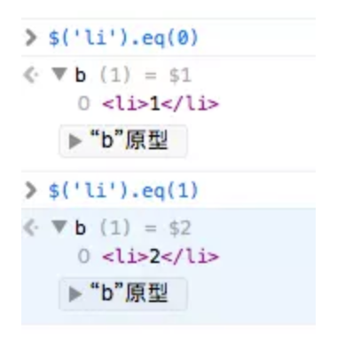
.next()
next取得匹配的元素集合中每一个元素紧邻的后面同辈元素的元素集合。如果提供一个选择器，那么只有紧跟着的兄弟元素满足选择器时，才会返回此元素。
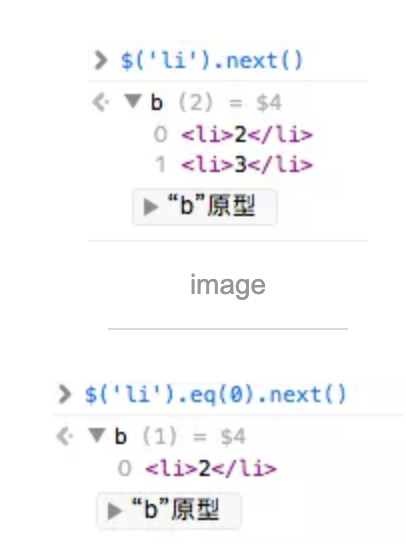
.prev()
prev正好相反，获取元素之前的同辈元素,如果同辈之前没有元素则返回空
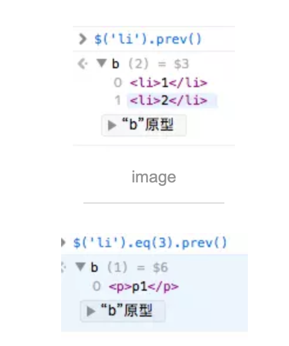
.nextAll()
nextAll获得每个匹配元素集合中每个元素所有后面的同辈元素，选择性筛选的选择器
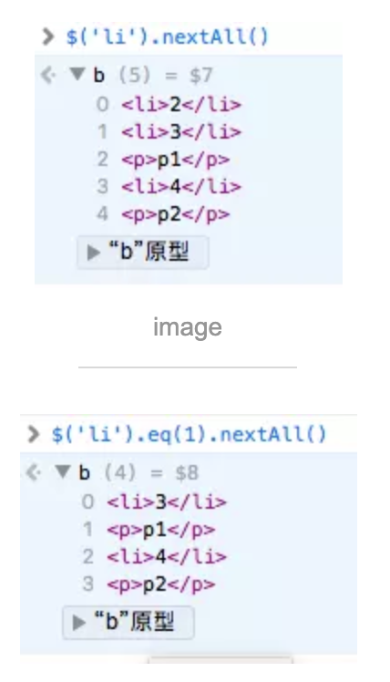
.prevAll()
prevAll与nextAll相反，获取元素前面的同辈元素
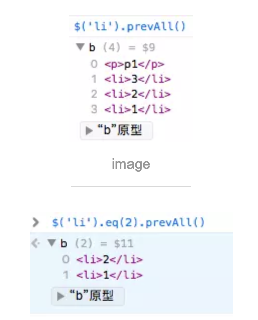
.siblings()
获得匹配元素集合中每个元素的兄弟元素,可以提供一个可选的选择器
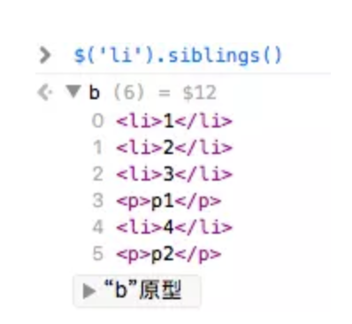
.parent()
取得匹配元素集合中，每个元素的父元素，可以提供一个可选的选择器
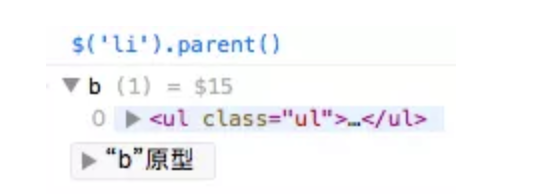
.parents()
获得集合中每个匹配元素的祖先元素，可以提供一个可选的选择器作为参数
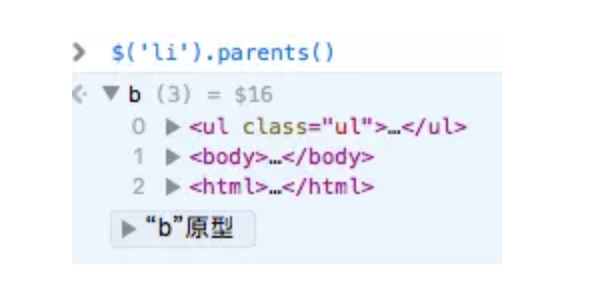
.children()
获得匹配元素集合中每个元素的子元素，选择器选择性筛选
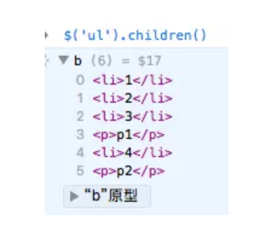
.find()
查找符合选择器的后代元素
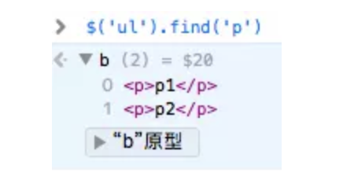
.filter()
筛选当前结果集中符合条件的对象，参数可以是一个选择器或者一个函数
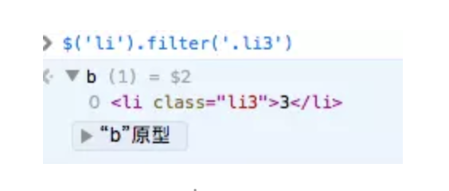
.has()
筛选匹配元素集合中的那些有相匹配的选择器或DOM元素的后代元素
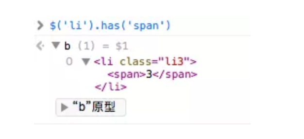
.is()
判断当前匹配的元素集合中的元素，是否为一个选择器，DOM元素，或者jQuery对象，如果这些元素至少一个匹配给定的参数，那么返回true
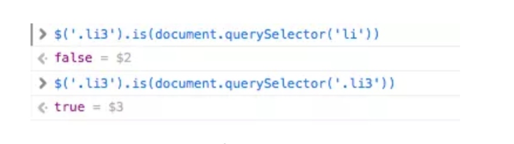
DOM和jQuery的相互转换
jQuery对象与dom的区别
jQuery对象是一个类数组的对象，对象原型中封装了许多jQuery自定义的方法。在jQuery对象中无法使用DOM对象的任何方法。
DOM对象===>jQuery对象
1
2var dom =document.getElementById("id"); // DOM对象
var $dom = $(dom); // jQuery对象Query对象====>DOM对象
1.jQuery对象是一个数据对象，通过 [index] 的方法
1 | var $dom = $("#id") ; // jQuery对象 |
2.jQuery提供方法，通过 .get(index) 方法
1 | var $dom = $("#id"); // jQuery对象 |
window.onload和$(document).ready有什么区别？document.onDOMContentLoaded呢?
window.onload是在dom文档树加载完和所有文件加载完之后执行一个函数document.ready原生中没有这个方法。
jquery中有$().ready(function),在dom文档树加载完之后执行一个函数（注意，这里面的文档树加载完全不代表全部文件加载完）。
$(document).ready要比winndow.onload先执行window.onload只能出来一次，$(document).ready可以出现多次。
当document.onDOMContentLoaded事件触发时，仅当DOM加载完成，不包括样式表，图片，flash。
两者触发时机不同，window.触发的更晚。
jQuery的$(document).ready就是利用了DOMContentLoaded来实现的，但是DOMContentLoaded在IE9以下不支持，需要对IE9以下版本进行兼容处理。